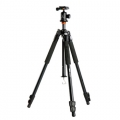

无忌
器材库
全部器材
产品年表
名词百科
榜单
器材库
> 脚架 > Abeo 243AB

精嘉
Abeo 243AB
分类
脚架
点评
0 条
图片
0 张
评测
0 篇
搭配双向摄影云台或球形云台，艾宝三脚架支持相机和大型的变焦镜头相机、大型望远镜、便携式摄像机，以及附加设备。
产品类型
脚架
综合评分
暂无评分
无忌评测
暂无评测
规格参数
网友点评
(0)
产品图 / 样片
(0)
评测文章
(0)
详细规格
发布日期
2012-01-10
厂家推荐价格
2,440.00 （人民币）
产品类型
脚架套装
材质
镁合金
节数
3
最大管径
24mm
折合高度
660mm
最高工作高度
1570mm / 不升中轴：1350mm
最低工作高度
190mm
最大负重
6kg
自重
1.85kg
云台
SBH-50
快装板
QS-39×2
特性
前后倾斜+90°~-35°，可360°旋转
该产品暂无存档的网友点评
该产品暂无存档的产品图
评测 / 相关文章
该产品暂无存档的评测文章